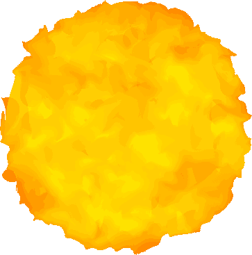
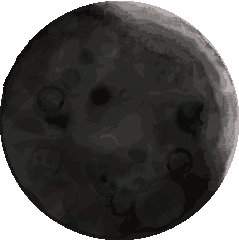
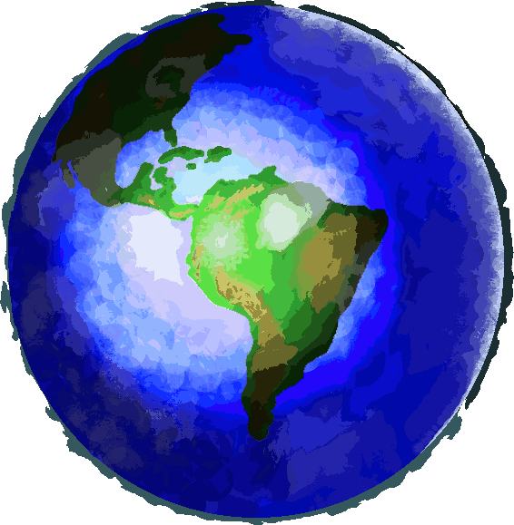
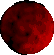

---The Expanse---
-Art-
The characteristic of artwork depicted below is for famous landmarks to be sketched completely off memory, attempted long after any actual observance. The style contributes a sense of novelty to the art:
{kind=link}
{kind=link}
{kind=link}
{kind=link}
-Resources-
Behold, the site mascot: Kerri Kat!
Is she a dog? A cat? Or both? Though she is now deceased, you may still be able hear Kerri's ghost through the window, barking - and quite possibly howling - at pedestrians as they pass on by. Click on the above avatar to memorialize Kerri Kat as a desktop icon.
Brightest star desktop icon:
Neon mouse cursor collection:


Gold mouse cursor collection:


Observe Kerri Kat WINKING at us! I swear under penalty of perjury that the image below has not been edited in any manner:
Click on Kerri Kat winking to capture it as a desktop icon.
-Talk About Dogs-
Did you know that there was once a dog god in Ancient Greek mythology? The brightest star in the night sky resides within a constellation shaped as a dog (constellation named Canis Major) hunting alongside its master (constellation named Orion) ... of course the Ancient Greeks had to make the brightest star into a god, and naturally the god would have to be a dog. -As far as I am aware, there is no cat god in Ancient Greek mythology... +1 for dogs!
I was watching a movie the other day titled Honey, I Shrunk the Kids... the miniature kids ran into none other than - a GIANT ANT. The ant was making these chirping "ant" noises, and that got me wondering: we don't really know how ants sound like, do we? They are too small to make loud enough noise! We can't even guess what the actual "ant" noises do sound like... a funny thought ran through my head: ants could be barking at us like dogs! We just didn't know it because they weren't barking loud enough for us to make out their little barks! It would be funny if we could shrink to the size of ants, only to learn they do bark like dogs! -I do not endorse that ants actually do bark like dogs... it would be funny though.
How many dogs does it take to screw in a lightbulb? Two: one to bark at you, and the other to sneak behind you and steal all the treats! -This is what is known as an anti-joke. An anti-joke is basically a joke written when you are too lazy to come up with a real joke... in a sense, the lazy man's joke.
Knock, knock. Who's there? Ruff, Ruff! Ruff who? I ruff you too! -This demonstrates how difficult it is to come up with knock-knock jokes that make sense... dogs can't talk!
I will come up with more dog talk soon...
06/29/2023:
Introducing Barker! ...the imaginary sidekick of Kerri Kat's ghost.
{kind=link}
Mascot Parody #1: Dogs... what are dogs made of? Absolutely nothing!
Mascot Parody #2: Keep it inside of you, don't give in... don't bark at anyone! ...Don't let them bark!
At the end of Honey, I Shrunk the Kids, the dad almost eats the miniature kids after they fall into his cereal. They were too small for the dad to see, but the family dog was on it: he had to bark at the dad repeatedly to stop him. Leave it to the dog to save the day! Imagine if the dad had eaten the kids... they would need another sequel: Honey, I Ate the Kids. The dad thought he was in hot water before! Just wait how much trouble he's in after he eats the kids on top of that! He'd really be in the doghouse!
I will keep working on more dog talk...